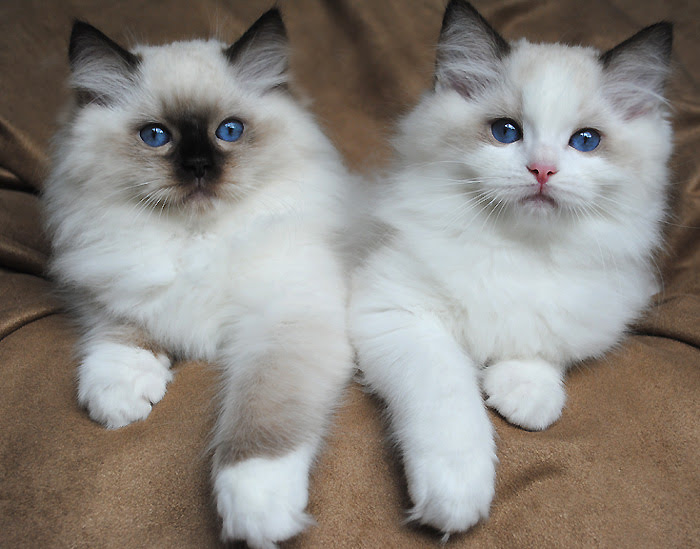
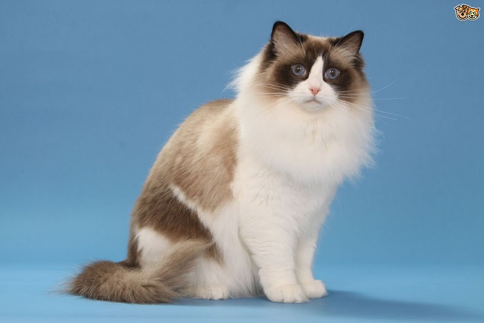

Mèo Ragdoll (hay còn gọi là Ragamuffin) là giống mèo cảnh “khổng lồ” xinh đẹp có nguồn gốc từ Mỹ. Chúng là giống mèo mang ngoại hình quyến rũ cùng bản tính nhẹ hàng, hòa đồng và tình cảm. Mèo Ragdoll nhận được sự yêu thích của mọi người bởi chúng sở hữu những nét đẹp tinh tế của một chú mèo, nhưng lại mang những phẩm chất tuyệt vời của một chú chó.
Hiện nay, giống mèo Ragoll còn rất hiếm ở Việt Nam do khó khăn trong việc nhân giống. Nguyên nhân chính của việc mèo Ragdoll khó nhân giống trong nước là do khí hậu không phù hợp.
Ragdoll là giống mèo hàn đới, kích thước lớn, lông dày, ưa khí hậu lạnh và khô do đó khó sinh trưởng trong điều kiện khí nậu nóng ẩm gió mùa ở Việt Nam, dẫn đến khả năng đậu thai rất thấp. Con non sinh ra cũng có tỉ lệ tử vong cao hơn các giống mèo khác.